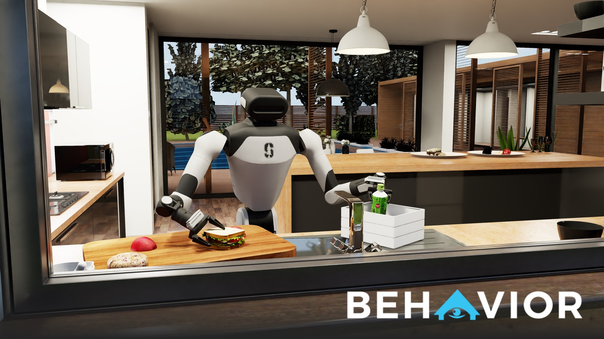

BE
BEHAVIOR-1K
100 个长时序家务任务，按部分完成度 Q-score 与全任务成功率评估。
判词
2026 届前三名来自 The North Star、IF1001 与 Cyber，Q-score 依次为 0.6828、0.6155、0.5955；2025 届第一名为 0.2599。两届口径不同，不能据此推算进步幅度。
壹已知之弊
- 2026 届只有 6 条已验证成绩，样本小。
- 2025 归档用另一套评测口径，两届不可直接比较。
- 另有 51 条自报成绩未经验证，单独发布。
- Q-score 与全任务成功率须分别引用。
贰碑面
BEHAVIOR-1K
官方榜单 ↗
类型 仿真指标 Q-score行数 40官方数据日 2026-10-17本站拉取 2026-11-14
据官方榜（2026-11-14），2026 届 57 条中 6 条经主办方验证，其余 51 条为自报分，本表另列自报分 Q-score≥0.1 的条目。2025 届只取经验证的测试集成绩，两届评测口径不同，不可直接比较。
| # | 模型 | Q-score | 协议 | 分榜 | 日期 | 状态 |
|---|---|---|---|---|---|---|
| 1 | Hiearchical Physical RSI Huawei Noah EAI Team |
0.683 |
队名 The North Star；全任务成功率 48.2%；Verified |
2026 届·已验证 | 10·17 | 官方榜 |
| 2 | VLA WAM Intellifusion |
0.615 |
队名 IF1001；全任务成功率 41.2%；Verified |
2026 届·已验证 | 10·16 | 官方榜 |
| 3 | WAM Xiaomi Robotics |
0.596 |
队名 Cyber；全任务成功率 39.6%；Verified |
2026 届·已验证 | 10·17 | 官方榜 |
| 4 | A²MEAS Anyverse-Autolab |
0.498 |
队名 Anyverse；全任务成功率 32.0%；Verified |
2026 届·已验证 | 10·17 | 官方榜 |
| 5 | A²WLA Anyverse-Autolab |
0.495 |
队名 Autolab；全任务成功率 30.9%；Verified |
2026 届·已验证 | 10·17 | 官方榜 |
| 6 | VLA+RSI Beijing XY Robot Technology Co., Ltd. |
0.484 |
队名 XYRobot；全任务成功率 28.9%；Verified |
2026 届·已验证 | 10·17 | 官方榜 |
| 1 | Agent + WAM CLab |
0.514 |
队名 asteroid；全任务成功率 30.8%；Self-reported，未经主办方验证；官方总序第 7 |
2026 届·自报 | 10·17 | 自报 |
| 2 | VLA+RSI Ambarella, Inc. |
0.481 |
队名 Tasman3001；全任务成功率 30.4%；Self-reported，未经主办方验证；官方总序第 8 |
2026 届·自报 | 10·17 | 自报 |
| 3 | Modified PI0.5 and Astra Independent |
0.446 |
队名 Robot Learning Collective；全任务成功率 27.3%；Self-reported，未经主办方验证；官方总序第 9 |
2026 届·自报 | 10·17 | 自报 |
| 4 | VLA SNU / SKT |
0.445 |
队名 VGI-SKT；全任务成功率 22.3%；Self-reported，未经主办方验证；官方总序第 10 |
2026 届·自报 | 10·17 | 自报 |
| 5 | A2R Anyverse-A2R |
0.432 |
队名 Anyverse-A2R；全任务成功率 24.7%；Self-reported，未经主办方验证；官方总序第 11 |
2026 届·自报 | 10·17 | 自报 |
| 6 | Multi VLA mor |
0.430 |
队名 multi；全任务成功率 19.8%；Self-reported，未经主办方验证；官方总序第 12 |
2026 届·自报 | 10·16 | 自报 |
| 7 | only one VLA model Independent |
0.420 |
队名 SORA；全任务成功率 22.5%；Self-reported，未经主办方验证；官方总序第 13 |
2026 届·自报 | 10·16 | 自报 |
| 8 | VLA + GPT Beijing 1011 Technology Co., Ltd. |
0.419 |
队名 MXI；全任务成功率 22.7%；Self-reported，未经主办方验证；官方总序第 14 |
2026 届·自报 | 10·17 | 自报 |
| 9 | VLA Independent |
0.410 |
队名 The Southern Cross；全任务成功率 23.0%；Self-reported，未经主办方验证；官方总序第 15 |
2026 届·自报 | 10·16 | 自报 |
| 10 | Lion-vla Lionrock AI lab |
0.408 |
队名 Lion；全任务成功率 21.8%；Self-reported，未经主办方验证；官方总序第 16 |
2026 届·自报 | 10·16 | 自报 |
| 11 | GPT6 code-as-policy Huawei Technologies Co., Ltd. |
0.408 |
队名 Huawei AI Algorithm Dept；全任务成功率 25.2%；Self-reported，未经主办方验证；官方总序第 17 |
2026 届·自报 | 10·17 | 自报 |
| 12 | pi05 morphic & 4dvlab |
0.404 |
队名 newbie；全任务成功率 21.7%；Self-reported，未经主办方验证；官方总序第 18 |
2026 届·自报 | 10·17 | 自报 |
| 13 | VERA-Volve AXXX |
0.400 |
队名 VERA；全任务成功率 25.0%；Self-reported，未经主办方验证；官方总序第 19 |
2026 届·自报 | 10·17 | 自报 |
| 14 | XR1 Xiaomi Robotics |
0.397 |
队名 Mirua；全任务成功率 19.8%；Self-reported，未经主办方验证；官方总序第 20 |
2026 届·自报 | 10·16 | 自报 |
| 15 | Pi0.5; RFT; Stage Input CAU / GMU / EWHA |
0.386 |
队名 George Albrecht；全任务成功率 20.0%；Self-reported，未经主办方验证；官方总序第 21 |
2026 届·自报 | 10·17 | 自报 |
| 16 | Modified PI0.5 VLA Sentience Inc |
0.379 |
队名 Sentience；全任务成功率 18.6%；Self-reported，未经主办方验证；官方总序第 22 |
2026 届·自报 | 10·16 | 自报 |
| 17 | Fine-tuned pi0.5 VLA Independent |
0.339 |
队名 Dexterity；全任务成功率 15.4%；Self-reported，未经主办方验证；官方总序第 23 |
2026 届·自报 | 10·16 | 自报 |
| 18 | SimVLA FrontierRobotics |
0.283 |
队名 SimVLA；全任务成功率 11.9%；Self-reported，未经主办方验证；官方总序第 24 |
2026 届·自报 | 10·16 | 自报 |
| 19 | Agentic VLA Ludo Robotics |
0.244 |
队名 Luci；全任务成功率 8.9%；Self-reported，未经主办方验证；官方总序第 25 |
2026 届·自报 | 10·17 | 自报 |
| 20 | vla-subtask SILab&DreamX |
0.233 |
队名 SILab-DreamX；全任务成功率 7.7%；Self-reported，未经主办方验证；官方总序第 26 |
2026 届·自报 | 10·15 | 自报 |
| 21 | Comet pi0.5 routed 100t Independent |
0.217 |
队名 Zero-Shot Butlers；全任务成功率 6.6%；Self-reported，未经主办方验证；官方总序第 27 |
2026 届·自报 | 10·17 | 自报 |
| 22 | Comet pi0.5 finetune Caltech, UCSD |
0.180 |
队名 coco；全任务成功率 3.1%；Self-reported，未经主办方验证；官方总序第 28 |
2026 届·自报 | 10·16 | 自报 |
| 23 | customized pi0.5 AI Robotics Innovative Institute |
0.176 |
队名 Magikid；全任务成功率 6.1%；Self-reported，未经主办方验证；官方总序第 29 |
2026 届·自报 | 10·16 | 自报 |
| 24 | Routed π0.5 Comet+2026 Independent |
0.165 |
队名 MAGIs；全任务成功率 2.7%；Self-reported，未经主办方验证；官方总序第 30 |
2026 届·自报 | 10·16 | 自报 |
| 25 | TAMP UIUC |
0.159 |
队名 sl-b1k；全任务成功率 8.5%；Self-reported，未经主办方验证；官方总序第 31 |
2026 届·自报 | 10·17 | 自报 |
| 26 | Dev-selected policy bank UT/Independent |
0.156 |
队名 KANR；全任务成功率 3.7%；Self-reported，未经主办方验证；官方总序第 32 |
2026 届·自报 | 10·17 | 自报 |
| 27 | Comet pi0.5 + low-LR FT Independent |
0.131 |
队名 YZX；全任务成功率 3.1%；Self-reported，未经主办方验证；官方总序第 33 |
2026 届·自报 | 10·15 | 自报 |
| 28 | Agent Brawn AI |
0.126 |
队名 Brawn AI；全任务成功率 9.8%；Self-reported，未经主办方验证；官方总序第 34 |
2026 届·自报 | 10·17 | 自报 |
| 29 | PI0.5 Cloud Data Technology Co Ltd |
0.106 |
队名 Cloud-Data；全任务成功率 5.0%；Self-reported，未经主办方验证；官方总序第 35 |
2026 届·自报 | 10·17 | 自报 |
| 1 | Robot Learning Collective Independent |
0.260 |
2025 届归档；Standard 赛道；测试集全任务成功率 12.4%；Verified |
2025 归档 | 11·14 | 官方榜 |
| 2 | Comet NVIDIA Research |
0.251 |
2025 届归档；Standard 赛道；测试集全任务成功率 11.4%；Verified |
2025 归档 | 11·17 | 官方榜 |
| 3 | SimpleAI Robot Beijing Simple AI Technology Co Ltd |
0.159 |
2025 届归档；Standard 赛道；测试集全任务成功率 10.8%；Verified |
2025 归档 | 11·17 | 官方榜 |
| 4 | The North Star Huawei CRI EAI Team |
0.120 |
2025 届归档；Standard 赛道；测试集全任务成功率 7.6%；Verified |
2025 归档 | 11·16 | 官方榜 |
| 5 | Embodied Intelligence Independent |
0.095 |
2025 届归档；Privileged 赛道；测试集全任务成功率 5.2%；Verified |
2025 归档 | 11·17 | 官方榜 |
叁上榜之器3 个
肆驿报
伍同类之碑